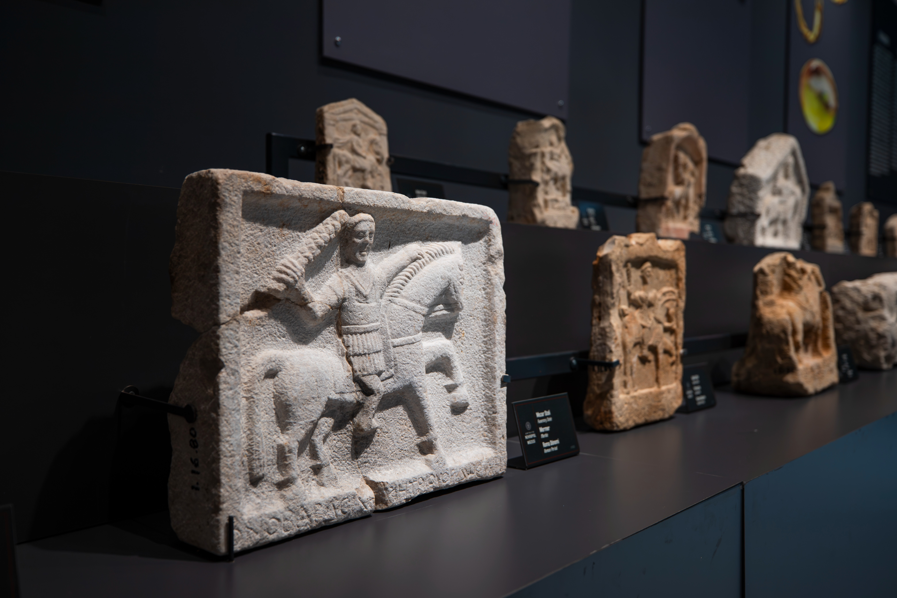

|  |
Antalya il merkezinde bulunan ve geleneksel olarak Eski Doğu Garajı ve Halk Pazarı Mevkii adlarıyla bilinen 12672 ada, 1 ve 2 no.lu parsele ilişkin 2005 yılında Antalya Büyükşehir Belediyesi tarafından, Antalya Kent Merkezi Doğu Garajı ve Halk Pazarı Alanı Düzenlenmesi Mimari Proje Yarışması açılmıştır. Antalya Mimarlar Odası başkanlığında gerçekleşen yarışma sonucuna göre Erkal Mimarlık (Ozan Erkal – Emre Erkal) tarafından hazırlanan proje birinci seçilerek uygulamaya hak kazanmıştır. Bu kapsamda 2008 yılında projenin inşaatına başlanmış ve temel hafriyatı çalışmaları sırasında Antik Dönem'e ait mezar kalıntıları açığa çıkmıştır.
Antalya Müzesi Müdürlüğü uzmanlarınca yapılan incelemeler sonucunda alanın Attaleia Antik Kenti'nin Doğu Nekropolisi olduğu anlaşılmış ve Antalya Müzesi Müdürlüğü tarafından alanda kurtarma kazıları başlatılmıştır. 2008 yılında başlatılan kurtarma kazıları neredeyse kesintisiz biçimde 2010 yılı sonuna kadar sürdürülmüş, 8450 m² alanda gerçekleştirilen kurtarma kazıları neticesinde 846 adet mezar, 1018 adet envanterlik, on binlerce etütlük arkeolojik eser ve iki bine yakın bireye ait insan iskeleti açığa çıkartılmıştır. Bu gelişmeler neticesinde nekropolis alanı Antalya Koruma Bölge Kurulunun 22.02.2011 tarihli ve 4866 karar numarasıyla I. Derece Arkeolojik Sit Alanı olarak tescil edilmiştir. Ayrıca 2020 yılında, önceki kazılarda rezerv olarak bırakılan yaklaşık 2500 m² alanda Antalya Müzesi Müdürlüğü tarafında, belediyemizin arkeolog, işçi ve araç-gereç desteği ile arkeolojik kazı çalışmaları gerçekleştirilmiştir.
Açığa çıkartılan mezarların büyük çoğunluğunun sadık tipi ve doğal ana kayaya yapılan gömüler olduğu anlaşılmıştır. Bununla birlikte dromoslu oda, khamasorion, lahit kapaklı khamasorion, pişmiş toprak plaka kaplı mezarlar diğer mezar tiplerini oluşturduğu ve bol miktarda, içinde iskeletleri bulunan kremasyon kapları tespit edilmiştir. Mezar buluntuları ve eski arşiv belgeleri üzerine yapılan son çalışmalar sonucunda alanın MÖ. 4. yy.’ın sonundan başlayarak neredeyse kesintisiz biçimde mezarlık (nekropolis) olarak kullanıldığı anlaşılmıştır.
|